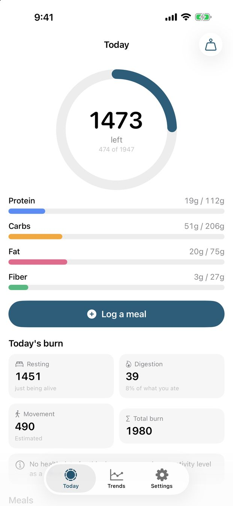
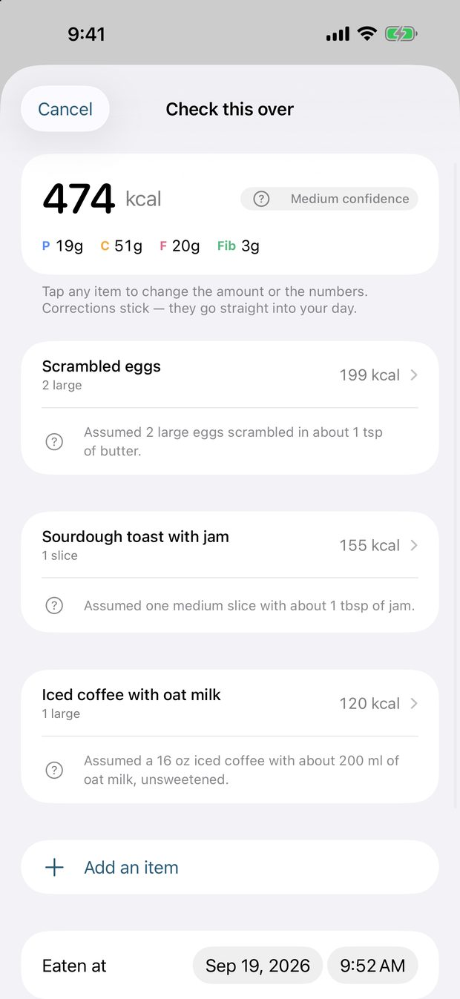
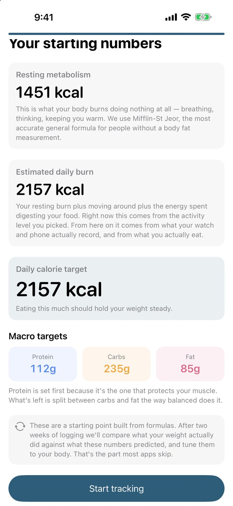

Measure what actually happens in a gym.
A small number of tools for physical education teachers and teacher education programs. Each one does a single job, records real data, and hands it back in a form a school can use.
What these tools record
- Time in moderate to vigorous activity
- ClassMetrics HR
- Heart-rate zone distribution, per student
- ClassMetrics HR
- Movement frame by frame, with joint angles
- CoachSAGE
- Placement hours, rubric scores and sign-off
- FieldTracker
- Daily energy balance, corrected weekly
- Basal
Four tools, each with a job.
ClassMetrics HR
iPadLive heart-rate monitoring for a whole class. Standard Bluetooth straps, one screen, and a session that turns into evidence of moderate to vigorous activity.
- Live zone view
- MVPA totals
- Roster import
- CSV export
CoachSAGE
iPhone and iPadFrame by frame video review for coaches and PE teachers. Draw on the movement, measure a joint angle, and compare two attempts side by side.
- High frame rate capture
- Joint angles
- Side by side
- Analysis by phase
Basal
iPhoneAn adaptive macro tracker. Describe a meal in plain language, and every target corrects itself against what your body actually does.
- Apple Health
- Adaptive targets
- Plain language logging
FieldTracker
WebField experience management for teacher education programs. Placements, hour logs, supervisor sign-off and accreditation reporting in one place.
- Three roles
- Rubric assessment
- Canvas integration
- CSV export
The real thing, not a mockup.
Captured from the app running on an iPhone. More go up here as CoachSAGE and ClassMetrics HR reach the same point.



How these are built.
Process, not just outcomes
A fitness score says what a student can do. Time in a heart-rate zone says what they actually did in your lesson. The second one is the part that tells you whether the teaching worked, and it is the harder one to collect, so that is where these tools start.
As little as the job needs
Video stays on the device it was recorded on. Class data stays on the iPad unless a teacher signs in to sync it. There are no analytics libraries and no advertising identifiers in any of these apps, because student data is not ours to collect.
Built in real classes
These are written by a physical education teacher educator and used in real gyms and real placements: noisy, fast, and short on prep time. A tool that needs ten minutes of setup before class does not get used twice.
Pilots, questions, and district use.
One person reads that inbox and normally replies within two business days. During the school year it can take a little longer.
- Which tool you are asking about
- Your role, and roughly how many teachers or students are involved
- Whether your district needs a data agreement or a security review first
- For a bug report: the device, what you did, and what happened instead